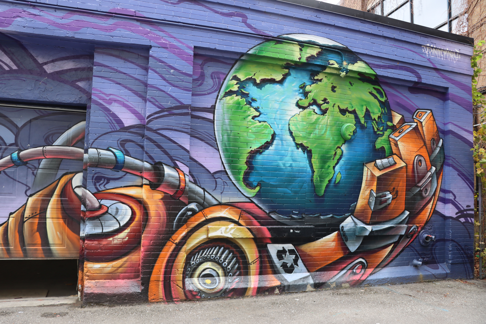

TITLE: HALLS LANE N3 YEAR: 2020 MEDIUM: Spray paint
About the artist: Bruno Smoky is a visual artist based out in Toronto, Canada. Inspired by the urban cityscapes of San Paulo where he grew up, this Brazilian street artist creates magical worlds with spray paint. He is famous for his colorful characters and highly detailed scenarios where he explores social realities that aren’t always colorful.

About this mural: This mural explores the healthy balance established between technology and nature. Bruno highlights the DTK role of using technology for the good of all. The contrast established between the massive mechanical robot holding the fragile earth makes us question what our future can look like.